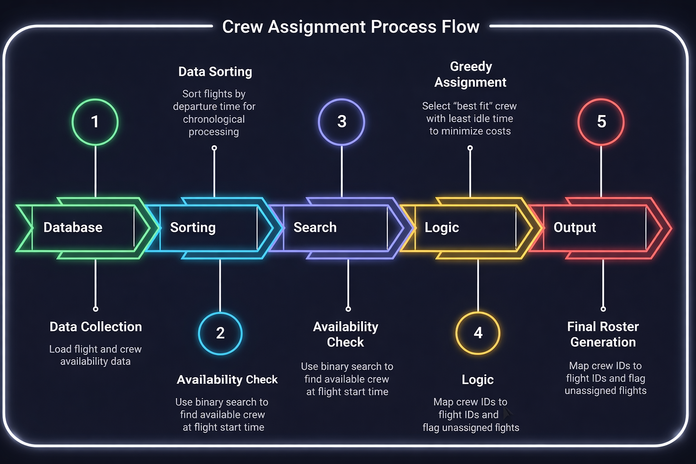

Airlines operate hundreds of flights daily, each requiring a specific set of crew members (pilots, flight attendants). The core problem is resource allocation under constraints: How to assign a limited pool of crew members to a schedule of flights such that:
We developed a C++ Algorithm that functions as an automated scheduler using a "Sort, Search, and Assign" pipeline to guarantee efficiency and correctness.
We utilized a “Sort-Search-Assign” pipeline to solve the problem efficiently.
| Component | Algorithm Used | Complexity | Why this choice? |
|---|---|---|---|
| Timeline | Merge Sort | O(N log N) | We need a stable sort to arrange flights chronologically. QuickSort is unstable and could mess up the order of simultaneous flights. |
| Crew Lookup | Binary Search | O(log M) | Searching linearly through 5,000+ crew members is too slow (O(M)). Binary search finds the best fit instantly. |
| Assignment | Greedy Strategy | O(1) | A “Greedy” choice (picking the pilot who waits the least) provides a locally optimal solution that saves costs globally. |
The system is dominated by the sorting step, making it highly scalable for thousands of daily flights.
This system promotes Crew well-being (SDG 3), Economic efficiency (SDG 8), and Technological innovation in aviation logistics (SDG 9) through intelligent, algorithm-based scheduling.
This interface runs the C++ logic in real-time. It sorts flights and uses binary search to find the crew member with the least idle time.
This website demonstrates the application of efficient algorithms to solve logistical problems in the aviation industry.